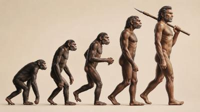

Hay preguntas que revelan curiosidad sincera; otras revelan desconocimiento. Y luego, está la joya de los creacionistas: «Si descendemos del mono, ¿por qué todavía hay monos?» Una interrogante que suele formularse con una sonrisa triunfal, como si acabara de demolerse siglo y medio de biología evolutiva en una sola frase. No comprenden que, desde el punto de vista científico, esa pregunta tendría la misma solidez lógica que: «Si los perros descienden de los lobos, ¿por qué todavía hay lobos?» O incluso, «Si Dios creó al hombre del polvo de la tierra, ¿por qué todavía hay polvo?» (Génesis 2:7).


Lo que pasa es que la evolución no funciona como ellos creen, y su error principal consiste en se imaginan este proceso como una escala en que una especie se transforma por completo en otra, desapareciendo la anterior. Pero sucede que no es una escala, sino algo más parecido a un árbol con innumerables ramas: cuando una población de organismos queda separada durante mucho tiempo —por cambios geográficos, ecológicos o de comportamiento—, cada grupo puede seguir su propio camino evolutivo. Y miles o millones de años después, esas poblaciones pueden convertirse en especies diferentes.
Por eso los seres humanos no descendemos de los chimpancés ni de los monos actuales. Más bien lo que dice la biología es que humanos, chimpancés y bonobos, compartimos un ancestro común que vivió hace aproximadamente seis o siete millones de años. Como lo explica el biólogo evolucionista británico Richard Dawkins (n. en 1941), no es que los humanos hayamos evolucionado de los chimpancés modernos; más bien los chimpancés y los humanos evolucionamos a partir de una especie ancestral que ya no existe. Esto es parecido a una familia humana: si dos hermanos tienen descendientes, mil años después existirán dos ramas familiares muy diferentes. Y nadie diría que una familia desciende de la otra, aunque ambas descienden de los mismos antepasados.
¿Entonces los monos no se convirtieron en humanos? —La respuesta es no. Esa pregunta revela otra idea errónea muy común: que producir al ser humano sería el objetivo final de toda la evolución. Sin embargo, la evolución no tiene metas, planes ni direcciones predeterminados. Definitivamente no existe ningún proyecto cósmico cuyo objetivo final sea formar homo sapiens. Deberíamos ser más modestos. De hecho, tal como lo explica la paleoantropóloga Briana Pobiner, del Smithsonian Institute de Washington DC, tampoco los demás primates se están convirtiendo en humanos, simplemente porque no lo necesitan. Los gorilas son excelentes siendo gorilas; los monos aulladores son excelentes siendo monos aulladores; los lémures son excelentes siendo lémures, y los chimpancés son excelentes siendo chimpancés. Todos han sobrevivido durante millones de años adaptándose exitosamente a sus respectivos entornos. Y desde el punto de vista biológico, eso es lo que importa.
La etóloga y primatóloga estadounidense Lynne A. Isbell (n. en 1955), profesora de antropología en la Universidad de California en Davis, lo resume perfectamente: «La evolución no es una progresión», y agrega: «Se trata de qué tan bien los organismos encajan en sus entornos actuales.» O sea, la evolución no es un ascenso hacia algo mejor; de lo que se trata es de qué tan bien un organismo se adapta a su ambiente.
Lo que sucede es que los creacionistas se hacen ese tipo de preguntas, porque parten de una idea completamente antropocéntrica: que los seres humanos somos la obra maestra de una supuesta creación, y el destino natural las formas de vida. Una idea que tiene que ver con textos religiosos, que afirman que el ser humano fue creado a imagen y semejanza de «Dios» (Génesis 1:26). Pero la realidad es que la biología no encuentra evidencia alguna de que exista alguna jerarquía cósmica de seres vivos, en la que los humanos ocupen la cima. Al contrario, desde la perspectiva evolutiva, los humanos no somos «más evolucionados» que un chimpancé, una hormiga o un murciélago. Después de todo, los organismos actuales llevan exactamente el mismo tiempo evolucionando a partir de los primeros seres vivos.
Una hormiga moderna es tan producto de la evolución como un ser humano. La diferencia es que cada especie siguió caminos distintos. De hecho, si midiéramos el éxito evolutivo en base a la abundancia y supervivencia, las hormigas podrían presumir bastante más que nosotros, porque hay muchísimas más hormigas que seres humanos, y ocupan prácticamente todos los ecosistemas terrestres.
Pero lo más curioso es que muchos de quienes rechazan la evolución darwiniana, la observan todos los días sin darse cuenta. Tomemos como ejemplo a los perros: resulta que todos los canes domésticos, desde el diminuto chihuahua hasta el enorme gran danés, descienden del lobo gris. Y los seres humanos lograron esa diversidad mediante selección artificial, un proceso en el que elegían para reproducirse a los individuos con características deseadas. Así, generación tras generación, aparecieron cambios acumulativos que produjeron cientos de razas diferentes.
Surge entonces la pregunta inevitable: Si los perros descienden del lobo, ¿por qué todavía existen lobos? —Pues, porque una parte de la población ancestral siguió viviendo como lobo, mientras que otra fue modificándose bajo la influencia humana. Y exactamente el mismo principio básico explica cómo se diversifican las especies en la naturaleza.
Otro ejemplo interesante es el de las plantas cultivadas. Muchas frutas y verduras modernas son radicalmente diferentes de sus antepasados silvestres. El maíz actual proviene de una planta llamada teosinte, que apenas se parece al maíz que hoy consumimos. Y así mismo, el repollo silvestre dio origen mediante selección artificial, al brócoli, la coliflor, las coles de Bruselas y el kale. Todas estas variedades surgieron, porque los seres humanos seleccionaron determinadas características durante generaciones. Y sin embargo, los antepasados silvestres no desaparecieron inmediatamente por el simple hecho de que surgieran nuevas variedades.
¿Qué ocurrió entonces con nuestros antepasados? —Nuestros ancestros primates siguieron distintos caminos evolutivos: algunas poblaciones permanecieron adaptadas a la vida arborícola, mientras que otras comenzaron a pasar más tiempo en el suelo. Y con el tiempo, aparecieron cambios anatómicos que favorecieron el desplazamiento bípedo: las piernas se alargaron, los pies cambiaron de estructura, y surgieron adaptaciones que terminarían dando forma a nuestra especie. Pero esto no significa que los demás primates estuvieran «equivocados», ni que se hayan quedado atrás. Simplemente siguieron rutas diferentes.
En el fondo, quizás la verdadera enseñanza de la evolución sea algo que algunas ideologías encuentran difícil de aceptar: que los seres humanos no somos el centro del universo. No somos el objetivo por excelencia de la naturaleza o de algún «Dios», ni formamos parte de un supuesto «Diseño Inteligente». Tampoco somos la culminación inevitable de la vida. Somos una simple rama más en el gigantesco árbol evolutivo. Pero una rama extraordinaria, sin duda, capaz de construir telescopios, escribir sinfonías y desarrollar vacunas. Aunque también una rama capaz de contaminar océanos, destruir ecosistemas y discutir en internet si seguimos siendo parientes de los monos.
Así que, para esos que todavía preguntan con aire de victoria: «Si descendemos del mono, ¿por qué todavía hay monos?», la respuesta es sencilla: por la misma razón que todavía hay lobos, aunque existan perros. Por la misma razón que todavía existen variedades silvestres, aunque cultivemos frutas y verduras modificadas. Y por la misma razón que el tronco de un árbol continúa coexistiendo después de que sus ramas se separan. La evolución produce diversidad, no reemplazos totales. Que quede claro entonces que los monos modernos no son nuestros antepasados, son más bien nuestros primos evolutivos.
[Godless Freeman]
https://www.livescience.com/32503-why-havent-all-primates-evolved-into-humans.html
Comentarios
Comments powered by Disqus